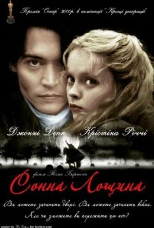

My Works
-
Пірати Карибського Моря: Прокляття чорної перлини
Життя харизматичного авантюриста, капітана Джека Горобця, сповнене захоплюючих пригод, різко змінюється, коли його заклятий ворог капітан Барбосса викрадає корабель Джека Чорну Перлину, а потім нападає на Порт Ройал і краде дочку губернатора Елізабет Свонн. Друг дитинства Елізабет Вілл Тернер разом із Джеком очолює рятувальну експедицію на найшвидшому кораблі Британії, щоб визволити дівчину і заразом відібрати у лиходія Чорну Перлину. Слідом за цією парочкою вирушає амбітний коммодор Норрінгтон, який до того ж вважається нареченим Елізабет. Однак Вілл не знає, що над Барбосою висить вічне прокляття, що при місячному світлі перетворює його з командою на живих скелетів. Прокляття буде знято лише тоді, коли вкрадене золото Ацтек буде повернуто піратами на старе місце.
-
Едвард Руки-ножиці
Культове, атмосферне, драматичне фентезі про похмурого перукаря на ім’я Едвард, з ножицями замість рук. За сюжетом, жіночка-комівояжер на ім’я Пег, щодня оббиває пороги своїх же подруг, настирливо пропонуючи їм подивитися на різні косметичні хитрощі. Плюнувши на скупих жителів провінційного американського містечка, Пег відважно їде до самого загадкового і страхітливого на вигляд будинку в містечку. Там Пег несподівано для себе зустрічає незвідану науці істоту - людини з руками-ножицями. Ім'я цієї істоти - Едвард, і вона настільки зворушлива і невинна, що Пег бере парубка і відвозить його до себе додому, де він і знайомиться з дочкою Пег - симпатичною і задумливою дівчиною з чарівним ім’ям Кім.
-
Ед Вуд
Нелегко зберігати спокій і додержуватися власних моральних і творчих принципів, якщо вся громадськість в один голос «волає», що більш нікчемного і бездарного режисера ще не зустрічалося в іноземному кінематографі. Але Ед Вуд і не думає здаватися. У чому його бездарність, і чому настільки одіозну фігуру не хотів належним чином визнавати вищезгаданий скандальний американський кінематограф? Режисери по теперішній день намагаються вникнути в долю відомої персони і розгадати таємницю її невдач. Фільм «Ед Вуд» - чергова спроба, на цей раз під талановитою і незвичайною режисурою Тіма Бертона. Чи може здобути славу і визнання людина, що називає себе трансвеститом? Або можливо, гроші по п'ятах ходять за геніальним перфекціоністом, він гадає себе і режисером, і продюсером, і актором в єдиній особі. Невже жінки ганяються за улесливими промовами і тягою до популярності? Але ж все вищеперелічене, як не можна краще характеризує режисера середини XX століття, що здумав «підірвати» усвідомлення своєї епохи. Але який нещасний він був, навряд чи зможе передати кінематограф. Та й чи можна розібрати, де правда, а що вигадка, якщо мова йде про великого майстра епатажу і перевтілень, який так і не зумів здобути славу, лише від того, що його час, судячи з усього, тоді ще не настав.
-
Кокаїн
В основу сюжету кримінальної драми «Кокаїн», знятої американським кінорежисером Тедом Демме, лягла реальна історія життя найвідомішого контрабандиста в США 70-х початку 80-х років - Джорджа Джейкоба Янга. Джордж Джанг виріс в передмісті, і вже тоді вирішив для себе, що буде заробляти собі на життя контрабандою героїну. Але як виявилося, наркотики це більше прерогатива чорношкірих хлопців, і білому буде дуже важко добитися будь-яких вершин в цьому бізнесі. Однак завдяки завзятості і своїм здібностям Джанго вдалося зломити цей стереотип, і незабаром його кримінальна кар'єра пішла стрімко вгору. Протягом довгого часу Джордж забезпечував дурманом багатьох впливових особистостей, і завжди був упевнений в якості свого товару, тому що і сам був не проти побалуватися наркотиками. Ні конкуренти, ні поліція не могли позбутися від зухвалого наркоторговця, а він в свою чергу отримував від цього велике задоволення. Але одного разу все змінилося.
-
Жах на вулиці В'язів
Одного разу Тіні, звичайній дівчині з благополучного американського передмістя, почали снитися жахливі сни про невідому, руку яка оснащена страшними ножами замість пальців. І яке ж було здивування Тіни, коли виявилося, що подібні сни бачить також і її улюблена подруга Ненсі, її хлопець і хлопець Ненсі. Так почався «Кошмар на вулиці В'язів». Нічні кошмари змусили Тіну попросити друзів переночувати в її будинку. Але вночі на Тіну напав її нічний кошмар, і її хлопець нічим не зміг їй допомогти. Адже таємничого вбивцю бачить тільки той, хто лежить. А ось всі жахи, які він творить зі своїми жертвами, виявляються більш ніж реальними. Після загибелі Тіни, в тюрмі вмирає її хлопець. Ненсі намагається розповісти про те, що відбувається. Дорослі не вірять їй. А будь-яка спроба заснути може обернутися для неї смертю. Загадкового вбивцю звуть Фредді Крюгер. Але він загинув від рук матері Ненсі багато років тому. Тепер, прорвавшись з небуття в дитячі сни, Фредді жадає вбити всіх, кого зможе дістати. Скільки ж Ненсі витримає без сну? Чи зможе вона врятуватися від помсти розлюченого маніяка?
-
Сонна лощина
«Сонна Лощина» - готичний фільм з елементами містики та детектива. Під час війни американських колоністів за свою незалежність один німецький кавалерист проявив себе, як безжалісний і жорстокий воїн, відрубувавши голови всім без розбору і зволікання. Він був схоплений в селищі Сонна Лощина, де його й обезголовили. Через 20 років спокій місцевих жителів був знову порушений: дивні вбивства скували страхом всю округу. Три жертви - три відрубані голови, які лиходій забрав з місця злочину. Поповзли чутки, що це справа рук не упокоєного кавалериста. Щоб заспокоїти народ розслідування доручили констеблеві Ікабоду Крейну. Методи Крейна, прихильника раціоналізму і логіки, який заперечує існування Бога, не припали до душі в місті, і його вирішили направити в глибинку. Всі розповіді про вершника без голови констебль вважає маячнею, приймаючи їх, швидше за фольклор, а не за факти. Крейн повинен подумки перенестися в минуле і переглянути свій критичний погляд на світ та зустріти любов. Такий його шлях до встановлення істини.
-
Фантастичні звірі і де їх шукати
Усіляких тварин в магічному світі без рахунку. Це знає Ньют Скамандер - людина, яка ще не написала книгу, яку прочитає Хлопчик-який-має-на-лобі-блискавку. Але зараз не народжені ні хлопчик, ні ті, хто його зачне, а Ньют випробовує на міцність Нью-Йорк. Чарівне співтовариство цього міста розбурхує звістка про прибуття чарівника з валізою. І чемоданчик цей хитрий - в ньому якраз і заховані чарівні істоти. І не тільки тваринки, але і їх життєві стихії. Але все-таки тваринкам, очевидно, не дуже там сподобалося, так що вони дали драпака, попутно розламавши деякі стіни ... І це не перший інцидент в житті майбутнього письменника (хоча перший в Нью-Йорку) - за подібні події його випровадили з Хогвартса. А сам містер Саламандер - той ще містер Таємниця, в якому секретного не менш, ніж в його дорожньому кейсі. Чому сам Альбус Дамблдор пручався за його відрахування? Що буде, якщо залізти в "фантастичний" чемодан? Звідки взяв витік майбутній бестселер шкільної бібліотеки в Шотландії? І хіба людина - не найфантастичніша тварина?
-
Мінамата
«Томоко у її ванні» Вільяма Юджина Сміта вважається однією з найвідоміших фотографій усіх часів. На ній зображено оголене тіло молодої дівчини, яку мати тримає у гарячій ванні: порожній погляд спрямований нагору, ребра випнуті, а кінцівки деформовані. Томоко стала пацієнтом лікарні внаслідок так званої хвороби Мінамату. Знаменитий фоторепортер знаходиться в затемненій нью-йоркській квартирі, там же живе і Юджин: алкоголь — його постійний супутник, а ночами його мучать тривожні образи, пов'язані з роботою під час Другої світової війни. Якось його вмовляють поїхати до Японії, цими людьми стають перекладачка Ейлін та Роберт Хейс, редактор журналу "Лайф". У селі Мінамата мешканці страждають від наслідків руйнівного отруєння ртуттю. Незабаром Сміт розкриває політичний скандал і виступає проти недобросовісної корпорації "Chisso". Чи вдасться йому виграти цю нерівну боротьбу?
-
Бенні і Джун
Фільм «Бенні і Джун» - розповідь про складність взаємовідносин між братом і сестрою, а також роздуми на тему пошуку своєї половинки, навіть якщо ти не від світу цього. Бенні працює механіком і має репутацію надійного хлопця. Багато в чому він став таким, тому що був змушений піклуватися про себе і молодшу сестру після загибелі батьків. Джун - художниця, яка страждає на шизофренію. Велику частину часу вона спокійна і виглядає адекватною, але в моменти нападів починає чути голоси в голові, влаштовує істерики і прагне підпалити все навколо. За дівчиною потрібен постійний догляд, але Бенні не завжди може бути поруч. На його щастя з нізвідки виникає вигадлива молода людина на ім'я Сем, який своїми витівками і сміливими ідеями притягує увагу Джун. Новий знайомий починає за нею наглядати, і між ними виникає щиро почуття. Бенні категорично не хоче приймати ці відносини. Своїми вчинками він доводить сестру до зриву, і тепер тільки втручання Сема може повернути Джун до нормального життя.
-
Джонні Д.
«Джонні Д.» - заснована на реальних подіях історія легендарного американського грабіжника банків Джона Діллінджера, який отримав всесвітню популярність в 30-х роках минулого століття, завдяки здійсненню безлічі успішних злочинів. Він - один з найбільш зухвалих і винахідливих грабіжників в історії США, котрий кілька років проносив клеймо ворога суспільства №1 в списках ФБР, і став одночасно з тим справжнім героєм і символом протесту для всіх знедолених і ущемлених урядом американців. Надихаючи на боротьбу з владою пригноблених нею співгромадян, банда Діллінджера з кожним новим разом провертала все більш грандіозні пограбування, витончено тікаючи з-під носа у правоохоронців і тюремних наглядачів. За лічені дні її лідеру вдалося завоювати місце головної мішені кращих агентів ФБР, які багато місяців докладали для його упіймання всіх зусиль, що були в їх розпорядженні. Фільм - ще одна спроба відновити хід подій, котрі давно лише в спогадах, але колись перевернули уявлення про злочинність у всіх прошарках американського суспільства.